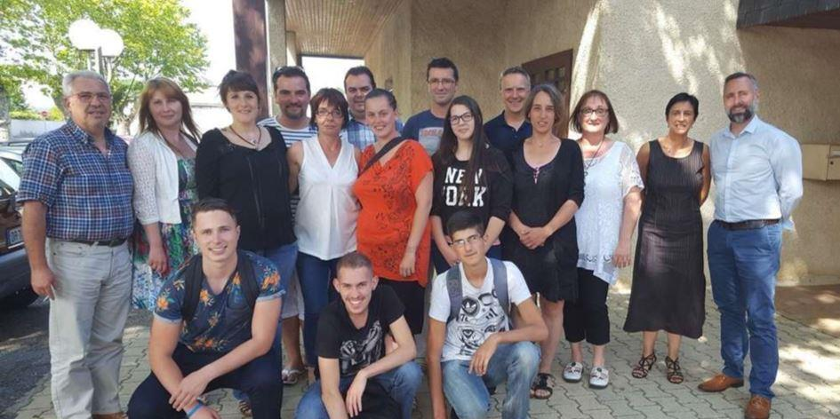
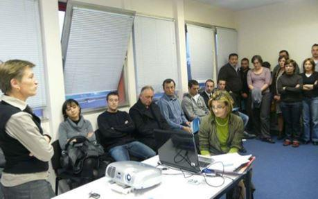
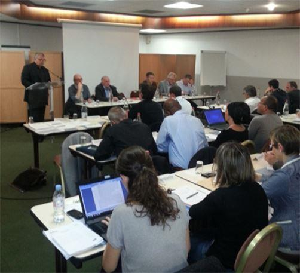

Plusieurs d’entre nous sommes appelés à développer des activités de formation. La connaissance et l’application des principes d’andragogie (plus communément appelé les principes d’éducation aux adultes) est primordial dans l’élaboration d’une formation efficace qui a de l’impact dans le changement des comportements.
L’andragogie est une science parce qu’elle doit être scientifique en ce qui attrait à la planification, l’application et l’évaluation des interventions éducatives mais c’est aussi un art parce qu’elle doit être imprégnée d’humanisme et repose sur le climat relationnel qui existe entre l’apprenant, le formateur (ou facilitateur) et les autres apprenants. En andragogie, la situation d’apprentissage favorise un climat d’apprentissage informel, détendu, égalitaire, convivial, centré sur l’estime de soi, le désir de collaboration et les besoins des apprenants. Il permet la référence de l’adulte à ses expériences qui constituent une ressource riche et fait appel à son autonomie, sa capacité d’adaptation au changement, sa motivation intrinsèque. Le formateur favorise l’exploitation de ces ressources et maintient un équilibre entre la structure de formation et le degré d’autonomie laissé à l’apprenant.
De nombreuses études1 qui prouvent que l’adulte entreprend des études avec une forte motivation et une détermination pour apprendre à la condition que le climat d’apprentissage respecte ce qu’il est comme individu et comme apprenant.
LE RÔLE DE LA FORMATION
La formation aide les individus à développer leurs connaissances, compétences et attitudes en appliquant les principes suivant lesquels les adultes apprennent le mieux. Un programme de formation efficace considère les changements de comportement comme un processus de l'apprentissage. La formation est le moyen le plus direct d'améliorer la performance, en particulier si elle porte non seulement sur l'acquisition de connaissances mais aussi sur les attitudes des apprenants et les compétences requises pour agir.
En tant que responsable de la formation, vous devez veiller à ce que vos formations soient appliquées de manière stratégique en vue de renforcer l’impact de vos programmes sur la vie de vos bénéficiaires.
LE RÔLE UNIQUE DU FORMATEUR
Beaucoup de gens conçoivent les formateurs comme des conférenciers mais il existe une différence considérable dans leurs rôles. Le rôle d'un conférencier est de transmettre des connaissances à l'aide de conférences, de lectures et devoirs. Le rôle d'un formateur est de répondre aux besoins identifiés pour un changement de comportement et une performance spécifique.
Les formateurs comprennent comment les adultes apprennent et comment structurer les activités de formation qui les aideront à mieux travailler. La formation ne doit pas consister simplement à transmettre des connaissances. La formation doit guider les stagiaires au moyen d'activités auxquelles ils doivent participer et appliquer leurs connaissances.
CONCEPTS DE L’ANDRAGOGIE
L’andragogie se fonde sur les concepts suivants :
1. Les adultes arrivent avec une expérience propre, rendant les groupes très hétérogènes et nécessitant une adaptation des stratégies d’apprentissage ; par contre, cela favorise les méthodes expérimentales et activités d’échange.
2. Les adultes sont aptes à apprendre si les connaissances permettent d’affronter des situations réelles : l’apprentissage ne peut donc pas être dissocié du besoin de développement,
Pour ce faire, élargir les points de vue des personnes en formation sur les évolutions du champ, fournir les références théoriques et méthodes développées à l’usage des personnes pour développer leur professionnalisme s’effectuent par la mise en œuvre d’une alternance entre des temps de formation et des temps de terrain, ces derniers permettant le recueil de données, puis l’application de méthodes et d’expérimentations.
3. Les adultes assimilent d’autant mieux que les connaissances, les compétences, les attitudes sont présentées dans le contexte de leur mise en application sur des situations réelles.
Le terrain est « exploité » le plus possible comme lieu de compréhension, d’identification des savoir-faire mis en œuvre, relevant d’une pratique intelligente faite parfois de débrouilles et d’astuces, ceux-ci mis en mots/réflexions sur ces pratiques et reliés au sens. Le terrain est aussi « exploité » comme lieu d’expérimentation de méthodes de découverte du territoire, par exemple. Pour cela, nous réalisons un diagnostic territorial sur plusieurs lieux, en partenariat avec des étudiants de l’École nationale supérieure d’architecture de Versailles (ensav). La pluridisciplinarité est largement favorisée et il apparaît que les incompréhensions et les problèmes sont souvent à la frontière de ces différentes disciplines. Pourquoi pas les résolutions ?
4. Les adultes ont besoin de savoir pourquoi ils doivent apprendre quelque chose,
Cette évidence se mesure aux freins qui sont mis en œuvre lorsque le groupe d’adultes ne voit pas le sens de ce qui lui est demandé. Il consiste à aller à la découverte d’un nouveau domaine. Mais « Découvrir » nécessite un changement de vision, de paradigme de compréhension et prend du temps pour lever les freins à… l’incompréhension. Il nous faut du temps pour faire comprendre l’objet de la formation et pour lever les appréhensions.

Adultes en formation à l’INFREP de Pau
5. Les adultes ont besoin d’être traités comme des individus capables de se prendre en main.
C’est une évidence qu’il importe pourtant de ne pas perdre de vue : le phénomène régressif est connu et l’expérimentation fait tout de suite appel à la prise de responsabilité, à l’engagement personnel et en groupe. De ce fait, la formation favorise cette implication personnelle et se fonde sur les apports du groupe.
6. Les adultes sont motivés intérieurement par le désir d’accroître leur satisfaction professionnelle, leur estime de soi…
Du coup, la formation doit être bâtie sur :
l’accroissement de l’auto-organisation des personnes ;
l’importance de leur expérience de vie : les apprenants devenant une ressource pour l’apprentissage ;
l’apprentissage centré autour du problème plutôt qu’autour du savoir d’un spécialiste.
L’andragogie repose sur un modèle de processus, à la différence de l’enseignement classique reposant sur un modèle de contenu.
LA PSYCHO-ANDRAGOGIE POUR APPRÉHENDER LES FREINS
 Présentation d’un dispositif de formation pour adultes – INFREP de PauApprofondir les obstacles à la participation à la formation des adultes est fondamental pour l’avancement des connaissances en éducation2. Les résultats révèlent que la plupart des adultes rencontrant des difficultés pour intégrer et suivre une formation réfère à des conceptions plutôt négatives de l’apprentissage associant toute éducation au monde scolaire. Ainsi, la non-participation s’expliquerait en partie par l’image négative forgée lors d’expériences scolaires antérieures.
Une recherche canadienne3 a approfondi la non-participation en alphabétisation et dans d’autres programmes de formation. Sa démarche qualitative montre, qu’en dépit du fait que la plupart des adultes a déjà pensé suivre des cours, plusieurs obstacles les ont empêchés de participer. La satisfaction à l’égard des compétences de base, le peu d’utilisation de l’écrit et le manque d’intérêt ont éloigné les adultes de la formation au cours de leur vie. Les charges et les pressions familiales, les difficultés liées au travail ont constitué des empêchements au retour aux études, de même que les expériences scolaires antérieures négatives, les appréhensions à l’égard des programmes et des enseignants ou l’éventualité de vivre un échec.
Quant aux recherches menées du point de vue des formateurs ou professionnels des formations de base, elles ont surtout été menées pour repérer les obstacles à la participation4. Ces études exploratoires étaient préliminaires à des recherches quantitatives, menées notamment par l’Institut universitaire de recherche en psychanalyse de Kinshasa, qui ont permis d’établir les catégories à utiliser dans des questionnaires ou des échelles de “dissuasions à la participation ». Il ressort de cette analyse que les principaux freins sont : le manque de connaissances sur les programmes offerts –même après plusieurs campagnes publicitaires–, la peur de l’échec et l’attitude négative du milieu, les difficultés liées au temps disponible et à l’horaire de travail, l’absence de motivation, le transport et le soin des enfants. Côté canadien, deux recherches5 présentent le point de vue des intervenants sur ces obstacles. Leurs résultats distinguent les barrières psychosociales et les barrières socio-économiques. Pour les premières, les auteurs notent que les personnes peu alphabétisées ne perçoivent pas leurs difficultés d’écriture et de lecture comme un facteur limitant leur avancement social et économique, que le manque de confiance en soi et de mauvaises expériences d’apprentissage antérieures rendent difficile l’inscription à un programme d’alphabétisation et, enfin, que la publicité met parfois l’accent sur les manques des analphabètes projetant ainsi une image négative des apprenants. Pour les barrières socio-économiques, l’étude révèle que les personnes peu scolarisées et provenant d’un milieu défavorisé se concentrent sur leurs besoins primaires (nourriture et logement) avant de penser à suivre un programme de formation. Les nombreux problèmes sociaux qu’ils rencontrent les empêchent de se concentrer sur leur apprentissage.
L’être humain est très complexe, nous sommes cependant probablement tous d’accord pour dire qu’il possède une grande capacité de réflexion et de créativité. L’application des principes d’andragogie encourage ce processus de réflexion et de créativité ; stimulant ainsi chez l’apprenant son besoin intrinsèque de se dépasser et par conséquent établit les fondements du changement de comportement et l’adoption de nouvelles attitudes. La psycho-andragogie permet, de son côté, d’identifier les freins à l’apprentissage et au cours de différentes séances d’en lever quelques-uns.
F.M.
1 Bourgeois, Nizet, 1997; Mezirow, 1991; Elias et Merriam, 1983; Cross, 1981.
2 Un courant dans ce domaine se développe aux États-Unis (Hayes & Darkenwald 1988). Les chercheurs analysent ces obstacles par facteur, à l’aide d’un échantillon d’adultes peu scolarisés participant à la formation. Beder (1990) interroge la pertinence de ces études car elles sont conduites sur un échantillon d’adultes déjà engagés dans des programmes de formation de base. Il étudie quant à lui les raisons de la non-participation d’adultes peu scolarisés et non participants en s’appuyant sur trente-deux énoncés illustrant des obstacles potentiels.
3 Long 2002.
4 Hayes & Darkenwald 1988, Beder & Valentine 1990, Sherman 1990, Beder 1994, Maurice 2016.
5 PGF Consultants Inc. 1997 et le département de psychanalyse du St Peter and St Paul Lutheran Institut 2016.
Partager cette page